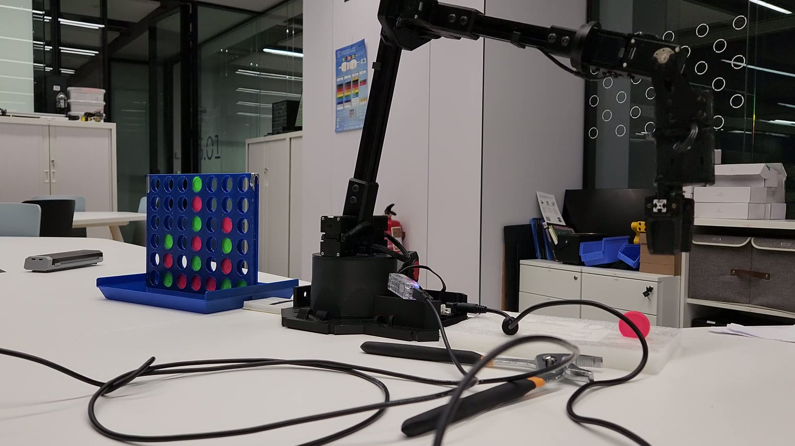
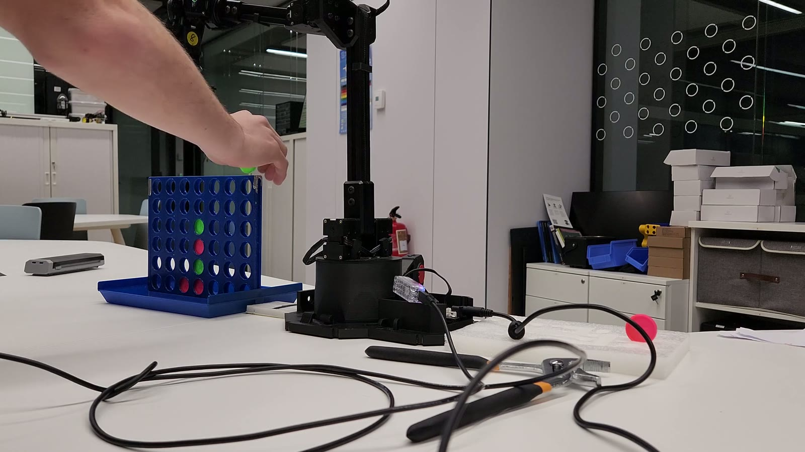
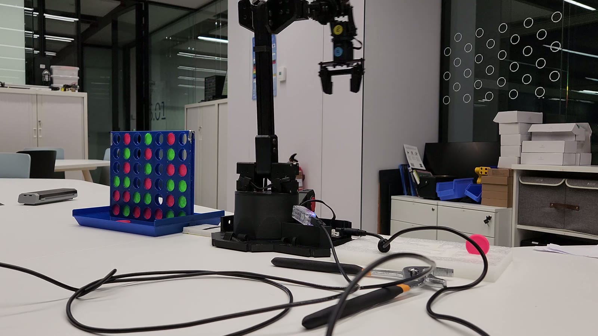

Robotics · 2025
VictorIA
A robot arm that plays Connect 4 on a real board.

One turn
Reading the board and choosing a move
Calibration locates the board before play. The repeated work on each turn uses a smaller cell classifier.
- Find the boardSAM 2 segments it from a few clicked points. A perspective warp converts the camera view into a flat grid.
- Read the moveA cell classifier assembles the 6 × 7 board state, checking where a new disc could have landed.
- Choose a columnMinimax searches five plies with alpha-beta pruning to select the next move.
- Place the discThe selected column is sent over HTTP to the arm's ROS machine, which picks up a disc and drops it into place.
The prototype
A full match against VictorIA
Hardware & software
Vision on the Mac, movement on ROS
- On the Mac
- Board calibration, cell recognition, game state, and move selection.
- On the arm's machine
- ROS control, disc pickup, column positioning, and travel poses.
- Between them
- An HTTP move endpoint carries the chosen column.

